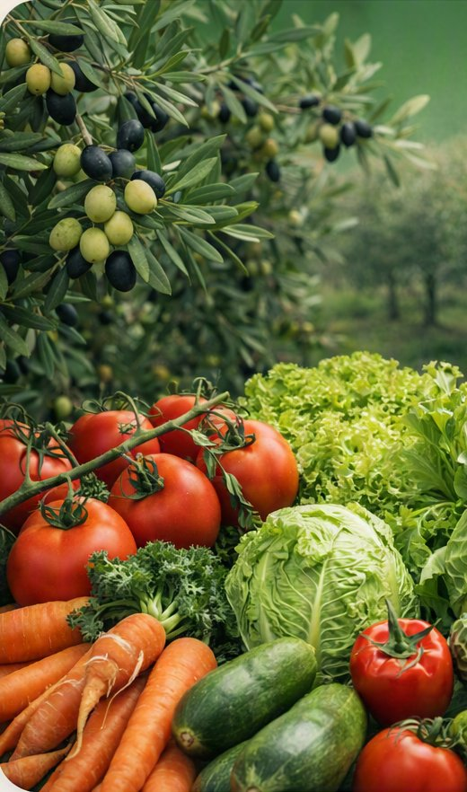

Enregistrez les traitements phytosanitaires sur l'olivier, le potager et toute culture différente de la vigne. Mêmes champs officiels, même saisie rapide avec l'IA, même registre imprimable.

En plus de la vigne, notre application gère le registre des traitements aussi pour l'olivier, le potager et toute autre culture de votre exploitation : tomates, oignons et bien plus. Mêmes champs que le registre phytosanitaire officiel, même simplicité.
Écrivez (ou dictez) « aujourd'hui cuivre sur l'oliveraie et engrais sur le potager » et l'application crée automatiquement les lignes du registre, en reconnaissant plusieurs produits et cultures dans un seul message.
Pour chaque produit, vous trouvez un lien de recherche rapide vers la Fiche de Données de Sécurité, à consulter quand vous en avez besoin.
Registre professionnel prêt à imprimer ou à archiver, même style que le registre phytosanitaire vigne.
Pour la vigne, le catalogue de produits de l'application est synchronisé régulièrement avec la base officielle E-Phy (ANSES). Pour les autres cultures, il n'existe pas de jeu de données officiel équivalent : vérifiez toujours l'autorisation du produit pour votre culture sur ephy.anses.fr ou sur l'étiquette du produit avant de traiter. Cette page et l'application ne remplacent pas les conseils d'un agronome.
Vigne, olivier, potager : tous les traitements dans un seul registre phytosanitaire numérique.
Ouvrir l'appli →